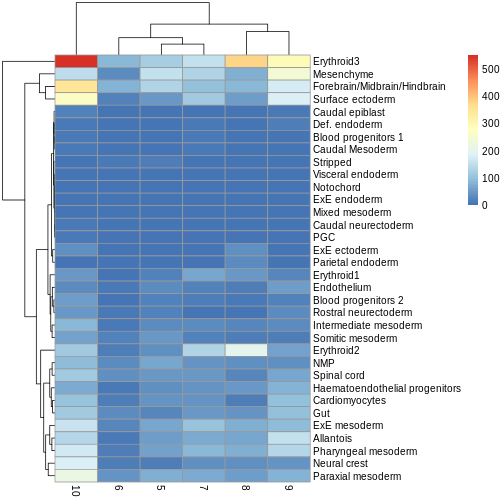
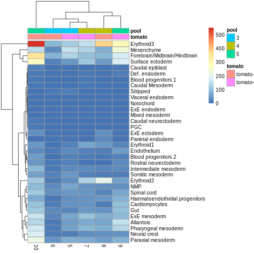
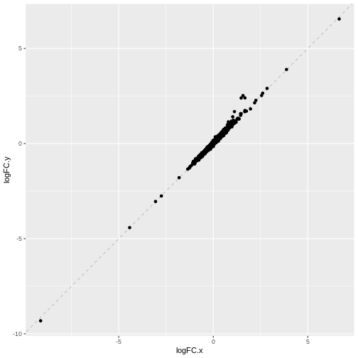
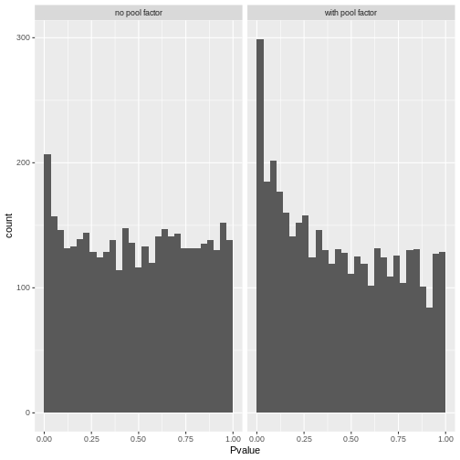

Multi-sample analyses
Last updated on 2025-12-19 | Edit this page
Estimated time: 45 minutes
Overview
Questions
- How can we integrate data from multiple batches, samples, and studies?
- How can we identify differentially expressed genes between experimental conditions for each cell type?
- How can we identify changes in cell type abundance between experimental conditions?
Objectives
- Correct batch effects and diagnose potential problems such as over-correction.
- Perform differential expression comparisons between conditions based on pseudo-bulk samples.
- Perform differential abundance comparisons between conditions.
Setup and data exploration
As before, we will use the the wild-type data from the Tal1 chimera experiment:
- Sample 5: E8.5 injected cells (tomato positive), pool 3
- Sample 6: E8.5 host cells (tomato negative), pool 3
- Sample 7: E8.5 injected cells (tomato positive), pool 4
- Sample 8: E8.5 host cells (tomato negative), pool 4
- Sample 9: E8.5 injected cells (tomato positive), pool 5
- Sample 10: E8.5 host cells (tomato negative), pool 5
Note that this is a paired design in which for each biological replicate (pool 3, 4, and 5), we have both host and injected cells.
We start by loading the data and doing a quick exploratory analysis,
essentially applying the normalization and visualization techniques that
we have seen in the previous lectures to all samples. Note that this
time we’re selecting samples 5 to 10, not just 5 by itself. Also note
the type = "processed" argument: we are explicitly
selecting the version of the data that has already been QC
processed.
R
library(MouseGastrulationData)
library(batchelor)
library(edgeR)
library(scater)
library(ggplot2)
library(scran)
library(pheatmap)
library(scuttle)
sce <- WTChimeraData(samples = 5:10, type = "processed")
R
sce
OUTPUT
class: SingleCellExperiment
dim: 29453 20935
metadata(0):
assays(1): counts
rownames(29453): ENSMUSG00000051951 ENSMUSG00000089699 ...
ENSMUSG00000095742 tomato-td
rowData names(2): ENSEMBL SYMBOL
colnames(20935): cell_9769 cell_9770 ... cell_30702 cell_30703
colData names(11): cell barcode ... doub.density sizeFactor
reducedDimNames(2): pca.corrected.E7.5 pca.corrected.E8.5
mainExpName: NULL
altExpNames(0):R
colData(sce)
OUTPUT
DataFrame with 20935 rows and 11 columns
cell barcode sample stage tomato
<character> <character> <integer> <character> <logical>
cell_9769 cell_9769 AAACCTGAGACTGTAA 5 E8.5 TRUE
cell_9770 cell_9770 AAACCTGAGATGCCTT 5 E8.5 TRUE
cell_9771 cell_9771 AAACCTGAGCAGCCTC 5 E8.5 TRUE
cell_9772 cell_9772 AAACCTGCATACTCTT 5 E8.5 TRUE
cell_9773 cell_9773 AAACGGGTCAACACCA 5 E8.5 TRUE
... ... ... ... ... ...
cell_30699 cell_30699 TTTGTCACAGCTCGCA 10 E8.5 FALSE
cell_30700 cell_30700 TTTGTCAGTCTAGTCA 10 E8.5 FALSE
cell_30701 cell_30701 TTTGTCATCATCGGAT 10 E8.5 FALSE
cell_30702 cell_30702 TTTGTCATCATTATCC 10 E8.5 FALSE
cell_30703 cell_30703 TTTGTCATCCCATTTA 10 E8.5 FALSE
pool stage.mapped celltype.mapped closest.cell
<integer> <character> <character> <character>
cell_9769 3 E8.25 Mesenchyme cell_24159
cell_9770 3 E8.5 Endothelium cell_96660
cell_9771 3 E8.5 Allantois cell_134982
cell_9772 3 E8.5 Erythroid3 cell_133892
cell_9773 3 E8.25 Erythroid1 cell_76296
... ... ... ... ...
cell_30699 5 E8.5 Erythroid3 cell_38810
cell_30700 5 E8.5 Surface ectoderm cell_38588
cell_30701 5 E8.25 Forebrain/Midbrain/H.. cell_66082
cell_30702 5 E8.5 Erythroid3 cell_138114
cell_30703 5 E8.0 Doublet cell_92644
doub.density sizeFactor
<numeric> <numeric>
cell_9769 0.02985045 1.41243
cell_9770 0.00172753 1.22757
cell_9771 0.01338013 1.15439
cell_9772 0.00218402 1.28676
cell_9773 0.00211723 1.78719
... ... ...
cell_30699 0.00146287 0.389311
cell_30700 0.00374155 0.588784
cell_30701 0.05651258 0.624455
cell_30702 0.00108837 0.550807
cell_30703 0.82369305 1.184919For the sake of making these examples run faster, we drop low quality cells (stripped nuclei and doublets) and also randomly select 50% cells per sample.
R
drop <- sce$celltype.mapped %in% c("stripped", "Doublet")
sce <- sce[,!drop]
set.seed(29482)
idx <- unlist(tapply(colnames(sce), sce$sample, function(x) {
perc <- round(0.50 * length(x))
sample(x, perc)
}))
sce <- sce[,idx]
We now normalize the data, run some dimensionality reduction steps,
and visualize the data in a tSNE plot. In this case we have many
different cell types, so we define a custom palette with many visually
distinct colors (adapted from the polychrome palette in the
pals
package).
R
sce <- logNormCounts(sce)
dec <- modelGeneVar(sce, block = sce$sample)
chosen.hvgs <- dec$bio > 0
sce <- runPCA(sce, subset_row = chosen.hvgs, ntop = 1000)
sce <- runTSNE(sce, dimred = "PCA")
sce$sample <- as.factor(sce$sample)
plotTSNE(sce, colour_by = "sample")

R
color_vec <- c("#5A5156", "#E4E1E3", "#F6222E", "#FE00FA", "#16FF32", "#3283FE",
"#FEAF16", "#B00068", "#1CFFCE", "#90AD1C", "#2ED9FF", "#DEA0FD",
"#AA0DFE", "#F8A19F", "#325A9B", "#C4451C", "#1C8356", "#85660D",
"#B10DA1", "#3B00FB", "#1CBE4F", "#FA0087", "#333333", "#F7E1A0",
"#C075A6", "#782AB6", "#AAF400", "#BDCDFF", "#822E1C", "#B5EFB5",
"#7ED7D1", "#1C7F93", "#D85FF7", "#683B79", "#66B0FF", "#FBE426")
plotTSNE(sce, colour_by = "celltype.mapped") +
scale_color_manual(values = color_vec) +
theme(legend.position = "bottom")

There are evident sample effects. Depending on the analysis that you want to perform you may want to remove or retain the sample effect. For instance, if the goal is to identify cell types with a clustering method, one may want to remove the sample effects with “batch effect” correction methods.
For now, let’s assume that we want to remove this effect.
Challenge
It seems like samples 5 and 6 are clearly separated off the other samples in gene expression space. Given the group of cells in each sample, why might this make sense for these samples as opposed to some other pair of samples? What is the factor presumably leading to this difference?
Samples 5 and 6 were from the same “pool” of cells. Looking at the
documentation for the dataset under ?WTChimeraData we see
that the pool variable is defined as: “Integer, embryo pool from which
cell derived; samples with same value are matched.” So samples 5 and 6
have an experimental factor in common which causes a shared, systematic
difference in their gene expression profiles compared to the other
samples. That’s why you can see many isolated blue/orange clusters on
the first TSNE plot. If you were developing single-cell library
preparation protocols you might want to preserve this effect to
understand how variation in pools leads to variation in expression, but
for now, given that we’re investigating other effects, we’ll want to
remove this as undesired technical variation.
Correcting batch effects
We “correct” the effect of samples with the
correctExperiment function in the batchelor
package, using the sample column as the batch variable.
R
set.seed(10102)
merged <- correctExperiments(
sce,
batch = sce$sample,
subset.row = chosen.hvgs,
PARAM = FastMnnParam(
merge.order = list(
list(1,3,5), # WT (3 replicates)
list(2,4,6) # td-Tomato (3 replicates)
)
)
)
merged <- runTSNE(merged, dimred = "corrected")
plotTSNE(merged, colour_by = "batch")

We can also see that when coloring cells by cell type, the cell types are now largely confined to individual clusters:
R
plotTSNE(merged, colour_by = "celltype.mapped") +
scale_color_manual(values = color_vec) +
theme(legend.position = "bottom")

Once we have removed the sample effect, we can proceed with the differential expression (DE) analysis.
Challenge
True or False? After batch correction, no batch-level information is present in the corrected data.
False. Batch-level data can be retained through confounding with experimental factors or poor ability to distinguish experimental effects from batch effects. Remember, the changes needed to correct the data are empirically estimated, so they can carry along error.
While batch effect correction algorithms usually do a pretty good job, it’s smart to do a sanity check for batch effects at the end of your analysis. You always want to make sure that that effect you’re resting your paper submission on isn’t driven by batch effects.
Differential Expression
In order to perform a differential expression (DE) analysis, we need to identify groups of cells across samples/conditions (depending on the experimental design and the overall goal of the experiment).
As we have seen before, there are two ways of grouping cells, cell clustering and cell labeling. Here, we apply the second approach to group cells according to the already annotated cell types to proceed with the computation of the pseudo-bulk samples.
Pseudo-bulk samples
To compute differences between groups of cells, a possible way is to compute pseudo-bulk samples, where we summarize the gene expression for all the cells of each specific cell type. We are then able to detect differences in gene expression between two different conditions for one cell type at a time.
To compute pseudo-bulk samples, we use the
aggregateAcrossCells function in the scuttle
package, which takes as input not only a SingleCellExperiment, but also
the label used for the identification of cell groups/types. Here, we use
as not just the cell type label, but also the sample ID, as we want be
able to discern between replicates and conditions later in the
analysis.
R
# Using 'label' and 'sample' as our two factors; each column of the output
# corresponds to one unique combination of these two factors.
summed <- aggregateAcrossCells(
merged,
id = colData(merged)[,c("celltype.mapped", "sample")]
)
summed
OUTPUT
class: SingleCellExperiment
dim: 13641 179
metadata(2): merge.info pca.info
assays(1): counts
rownames(13641): ENSMUSG00000051951 ENSMUSG00000025900 ...
ENSMUSG00000096730 ENSMUSG00000095742
rowData names(3): rotation ENSEMBL SYMBOL
colnames: NULL
colData names(15): batch cell ... sample ncells
reducedDimNames(5): corrected pca.corrected.E7.5 pca.corrected.E8.5 PCA
TSNE
mainExpName: NULL
altExpNames(0):Differential Expression (DE) Analysis
The main advantage of using pseudo-bulk samples is that we can use established methods for bulk DE analysis like edgeR and DESeq2. Both, edgeR and DESeq2, are based on negative binomial models, but differ in their normalization strategies and several implementation details.
First, let’s start with a specific cell type, for instance the
“Mesenchymal stem cells”, and analyze gene expression differences
between conditions for this cell type. We store the counts table in a
DGEList data container called y, along with
experimental metadata.
R
current <- summed[, summed$celltype.mapped == "Mesenchyme"]
y <- DGEList(counts(current), samples = colData(current))
y
OUTPUT
An object of class "DGEList"
$counts
Sample1 Sample2 Sample3 Sample4 Sample5 Sample6
ENSMUSG00000051951 2 0 0 0 1 0
ENSMUSG00000025900 0 0 0 0 0 0
ENSMUSG00000025902 4 0 2 0 3 6
ENSMUSG00000033845 765 130 508 213 781 305
ENSMUSG00000002459 2 0 1 0 0 0
13636 more rows ...
$samples
group lib.size norm.factors batch cell barcode sample stage tomato pool
Sample1 1 2478901 1 5 <NA> <NA> 5 E8.5 TRUE 3
Sample2 1 548407 1 6 <NA> <NA> 6 E8.5 FALSE 3
Sample3 1 1260187 1 7 <NA> <NA> 7 E8.5 TRUE 4
Sample4 1 578699 1 8 <NA> <NA> 8 E8.5 FALSE 4
Sample5 1 2092329 1 9 <NA> <NA> 9 E8.5 TRUE 5
Sample6 1 904929 1 10 <NA> <NA> 10 E8.5 FALSE 5
stage.mapped celltype.mapped closest.cell doub.density sizeFactor
Sample1 <NA> Mesenchyme <NA> NA NA
Sample2 <NA> Mesenchyme <NA> NA NA
Sample3 <NA> Mesenchyme <NA> NA NA
Sample4 <NA> Mesenchyme <NA> NA NA
Sample5 <NA> Mesenchyme <NA> NA NA
Sample6 <NA> Mesenchyme <NA> NA NA
celltype.mapped.1 sample.1 ncells
Sample1 Mesenchyme 5 151
Sample2 Mesenchyme 6 28
Sample3 Mesenchyme 7 127
Sample4 Mesenchyme 8 75
Sample5 Mesenchyme 9 239
Sample6 Mesenchyme 10 146We usually want to discard low quality samples with low sequencing depth / library size as they have the potential to skew normalization and/or DE analysis.
We can see that in our case we don’t have low quality samples, so there is no need for such a filtering step.
R
discarded <- current$ncells < 10
y <- y[,!discarded]
summary(discarded)
OUTPUT
Mode FALSE
logical 6 Typically, we also want to filter out genes with too low of an expression to be meaningfully retained in a statistcal analysis for differential expression.
R
keep <- filterByExpr(y, group = current$tomato)
y <- y[keep,]
summary(keep)
OUTPUT
Mode FALSE TRUE
logical 9121 4520 We can now proceed with normalizing the data. There are several
approaches for normalizing bulk data, that are thus readily applicable
to pseudo-bulk data. Here, we use the Trimmed Mean of M-values
(TMM) method, implemented in the edgeR package within the
calcNormFactors function.
R
y <- calcNormFactors(y)
y$samples
OUTPUT
group lib.size norm.factors batch cell barcode sample stage tomato pool
Sample1 1 2478901 1.0506857 5 <NA> <NA> 5 E8.5 TRUE 3
Sample2 1 548407 1.0399112 6 <NA> <NA> 6 E8.5 FALSE 3
Sample3 1 1260187 0.9700083 7 <NA> <NA> 7 E8.5 TRUE 4
Sample4 1 578699 0.9871129 8 <NA> <NA> 8 E8.5 FALSE 4
Sample5 1 2092329 0.9695559 9 <NA> <NA> 9 E8.5 TRUE 5
Sample6 1 904929 0.9858611 10 <NA> <NA> 10 E8.5 FALSE 5
stage.mapped celltype.mapped closest.cell doub.density sizeFactor
Sample1 <NA> Mesenchyme <NA> NA NA
Sample2 <NA> Mesenchyme <NA> NA NA
Sample3 <NA> Mesenchyme <NA> NA NA
Sample4 <NA> Mesenchyme <NA> NA NA
Sample5 <NA> Mesenchyme <NA> NA NA
Sample6 <NA> Mesenchyme <NA> NA NA
celltype.mapped.1 sample.1 ncells
Sample1 Mesenchyme 5 151
Sample2 Mesenchyme 6 28
Sample3 Mesenchyme 7 127
Sample4 Mesenchyme 8 75
Sample5 Mesenchyme 9 239
Sample6 Mesenchyme 10 146To investigate the effect of the normalization, we use a Mean-Difference (MD) plot for each sample in order to detect possible normalization issues due to insufficient cells/reads/UMIs in any of the pseudo-bulk profiles.
In our case, we verify that all these plots are centered on 0 (\(y\)-axis) and display a trumpet shape, as expected.
R
par(mfrow = c(2,3))
for (i in seq_len(ncol(y))) {
plotMD(y, column = i)
}

R
par(mfrow = c(1,1))
Furthermore, we want to check if the samples cluster together based on known experimental factors (like the tomato injection in this case).
Here, we use a multidimensional scaling (MDS) plot to inspect this. Multidimensional scaling (also called principal coordinate analysis (PCoA)) is a dimensionality reduction technique that’s conceptually similar to principal component analysis (PCA).
R
limma::plotMDS(cpm(y, log = TRUE),
col = ifelse(y$samples$tomato, "red", "blue"))

We then construct a design matrix with the tomato variable as the main factors and pool as an additional covariate.
R
design <- model.matrix(~factor(pool) + factor(tomato),
data = y$samples)
design
OUTPUT
(Intercept) factor(pool)4 factor(pool)5 factor(tomato)TRUE
Sample1 1 0 0 1
Sample2 1 0 0 0
Sample3 1 1 0 1
Sample4 1 1 0 0
Sample5 1 0 1 1
Sample6 1 0 1 0
attr(,"assign")
[1] 0 1 1 2
attr(,"contrasts")
attr(,"contrasts")$`factor(pool)`
[1] "contr.treatment"
attr(,"contrasts")$`factor(tomato)`
[1] "contr.treatment"Now we can estimate the Negative Binomial (NB) overdispersion parameter, to model the mean-variance trend.
R
y <- estimateDisp(y, design)
summary(y$trended.dispersion)
OUTPUT
Min. 1st Qu. Median Mean 3rd Qu. Max.
0.01002 0.01591 0.02472 0.02131 0.02574 0.02652 The BCV plot allows us to visualize the relationship between the
Biological Coefficient of Variation and the Average log CPM for each
gene. Additionally, the Common and Trend BCV are shown in
red and blue.
R
plotBCV(y)

We then fit a Quasi-Likelihood (QL) negative binomial generalized
linear model for each gene. The robust = TRUE parameter
avoids distortions from highly variable clusters. The QL method includes
an additional dispersion parameter for incorporating the uncertainty and
variability of the per-gene variance, which is not well estimated by the
NB dispersions, so the two dispersion types complement each other in the
final analysis.
R
fit <- glmQLFit(y, design, robust = TRUE)
summary(fit$var.prior)
OUTPUT
Length Class Mode
0 NULL NULL R
summary(fit$df.prior)
OUTPUT
Min. 1st Qu. Median Mean 3rd Qu. Max.
0.6968 7.9221 7.9221 7.8972 7.9221 7.9221 QL dispersion estimates for each gene as a function of abundance. Raw estimates (black) are shrunk towards the trend (blue) to yield squeezed estimates (red).
R
plotQLDisp(fit)

We then use an empirical Bayes quasi-likelihood F-test to test for differential expression (due to tomato injection) for each gene at a False Discovery Rate (FDR) of 5%. The low number of DE genes shwos that tomato injection does not have a major impact on gene expression in mesenchymal cells.
R
res <- glmQLFTest(fit, coef = ncol(design))
summary(decideTests(res))
OUTPUT
factor(tomato)TRUE
Down 5
NotSig 4510
Up 5R
topTags(res)
OUTPUT
Coefficient: factor(tomato)TRUE
logFC logCPM F PValue FDR
ENSMUSG00000010760 -4.1560168 9.973704 1070.96054 1.940322e-11 8.770254e-08
ENSMUSG00000096768 1.9992563 8.844258 379.81665 3.081008e-09 6.963079e-06
ENSMUSG00000086503 -6.4902580 7.411257 248.15766 1.911494e-07 2.879984e-04
ENSMUSG00000035299 1.7979019 6.904163 126.18570 5.814967e-07 6.570913e-04
ENSMUSG00000101609 1.3746824 7.310009 81.40822 4.275035e-06 3.864631e-03
ENSMUSG00000019188 -1.0193854 7.545530 62.43651 1.374972e-05 1.035812e-02
ENSMUSG00000024423 0.9943824 7.391075 59.10516 1.742749e-05 1.125318e-02
ENSMUSG00000042607 -0.9541504 7.468203 45.63814 5.201678e-05 2.938948e-02
ENSMUSG00000027520 1.5873733 6.952923 41.78827 7.480284e-05 3.594063e-02
ENSMUSG00000036446 -0.8307640 9.401028 41.16271 7.951468e-05 3.594063e-02All the previous steps can be conveniently performed for each cell
type, with the pseudoBulkDGE function from the scran package.
R
summed.filt <- summed[,summed$ncells >= 10]
de.results <- pseudoBulkDGE(
summed.filt,
label = summed.filt$celltype.mapped,
design = ~factor(pool) + tomato,
coef = "tomatoTRUE",
condition = summed.filt$tomato
)
The returned object is a list of DataFrames each storing
the results for one of the cell types. Each of these
DataFrames also contains the intermediate results of the
full edgeR
pipeline carried out above, which allows us to apply diagnostics and
visualization of individual steps of the pipeline.
R
cur.results <- de.results[["Allantois"]]
cur.results[order(cur.results$PValue),]
OUTPUT
DataFrame with 13641 rows and 5 columns
logFC logCPM F PValue FDR
<numeric> <numeric> <numeric> <numeric> <numeric>
ENSMUSG00000037664 -8.00072 11.56010 3349.683 1.15757e-27 4.81318e-24
ENSMUSG00000010760 -2.57691 12.41096 1095.755 8.21809e-22 1.70854e-18
ENSMUSG00000086503 -7.01824 7.50026 762.544 6.36342e-20 8.81970e-17
ENSMUSG00000096768 1.82579 9.33347 314.684 1.83678e-15 1.90934e-12
ENSMUSG00000022464 0.96701 10.28038 119.758 6.65050e-11 5.53056e-08
... ... ... ... ... ...
ENSMUSG00000095247 NA NA NA NA NA
ENSMUSG00000096808 NA NA NA NA NA
ENSMUSG00000079808 NA NA NA NA NA
ENSMUSG00000096730 NA NA NA NA NA
ENSMUSG00000095742 NA NA NA NA NAChallenge
Clearly some of the results have low p-values. What about
the effect sizes? What does logFC stand for?
“logFC” stands for log fold-change, typically on a log2 scale. That means a 2-fold increase in gene expression corresponds to a logFC of log2(2) = 1.
ENSMUSG00000037664 seems to have an estimated logFC of
about -8. That points to a large decrease in expression of that gene in
Allantois cells of the tomato positive samples.
Differential Abundance (DA) analysis
In addition to differences in gene expression, we also want to find differences in cell type abundance between conditions (here in tomato positive vs wild type samples).
Therefore, we first quantify the number of cells for each cell type, and then fit a model to detect differences between the injected cells and the background.
This process is very similar to differential expression analysis, but here we apply the analysis on the computed abundances without normalizing the data first.
R
abundances <- table(merged$celltype.mapped, merged$sample)
abundances <- unclass(abundances)
extra.info <- colData(merged)[match(colnames(abundances), merged$sample),]
y.ab <- DGEList(abundances, samples = extra.info)
design <- model.matrix(~factor(pool) + factor(tomato), y.ab$samples)
y.ab <- estimateDisp(y.ab, design, trend = "none")
ERROR
Error in loglik + prior.n * m0: non-conformable arraysR
fit.ab <- glmQLFit(y.ab, design, robust = TRUE, abundance.trend = FALSE)
Background on compositional effect
We don’t normalize the abundance data with the
calcNormFactors function, as this would implicitly work
under the assumption that most of the input features do not vary between
conditions. This is typically not a reasonable assumption for cell type
abundances as we often only have a few different cell populations that
all can change with different experimental conditions. This means that
here we will not normalize for library size, which in abundance data
corresponds to the total number of cells in each sample (cell type).
However, this can lead our data to be susceptible to compositional effects. “Compositional” refers to the fact that the cluster abundances in a sample are not independent of one another because each cell type is effectively competing for space in the sample. They behave like proportions in that they must sum to 1. If the abundance of cell type A increases under a certain condition, we consequenlty observe less abundance of all other cell types, even if all other cell types are not directly affected by this condition.
Not accounting for compositionality means that any conclusions derived from the DA analysis can be biased by the amount of cells present for each cell type. And it is not uncommon that the number of cells can be strongly unbalanced between cell types, with some low abundance cell types comprising close to 0 percent and certain high abundance cell types making up close to 100 percent of all cells in a sample.
We now look at different approaches for handling the compositional effect.
Assuming most labels do not change
We can use a similar approach as for the DE analysis, assuming that most labels are not changing, in particular if we consider the fact that only few genes where found to be differentially expressed in the analysis above.
To do so, we first normalize the data with
calcNormFactors and then we fit and estimate a QL-model for
the abundance data.
R
y.ab2 <- calcNormFactors(y.ab)
y.ab2$samples$norm.factors
OUTPUT
[1] 1.1029040 1.0228173 1.0695358 0.7686501 1.0402941 1.0365354We then use functions from edgeR as before:
R
y.ab2 <- estimateDisp(y.ab2, design, trend = "none")
ERROR
Error in loglik + prior.n * m0: non-conformable arraysR
fit.ab2 <- glmQLFit(y.ab2, design, robust = TRUE, abundance.trend = FALSE)
res2 <- glmQLFTest(fit.ab2, coef = ncol(design))
summary(decideTests(res2))
OUTPUT
factor(tomato)TRUE
Down 2
NotSig 32
Up 0R
topTags(res2, n = 10)
OUTPUT
Coefficient: factor(tomato)TRUE
logFC logCPM F PValue FDR
ExE ectoderm -5.7548150 13.13052 36.592240 6.975860e-08 2.371793e-06
Parietal endoderm -6.9054141 12.34396 25.026083 4.230885e-06 7.192505e-05
Mesenchyme 0.9661857 16.32776 6.489987 1.311439e-02 1.220524e-01
Erythroid3 -0.9188382 17.34602 6.313470 1.435911e-02 1.220524e-01
Neural crest -1.0212778 14.84714 5.444709 2.259224e-02 1.536272e-01
ExE endoderm -3.9992886 10.75223 4.356716 4.061361e-02 2.301438e-01
Endothelium 0.8725903 14.12053 3.393104 6.983028e-02 3.391756e-01
Cardiomyocytes 0.6943555 14.93781 2.662584 1.073567e-01 4.562660e-01
Allantois 0.5914769 15.55508 2.120304 1.499595e-01 5.665138e-01
Erythroid2 -0.5257535 15.97144 1.742353 1.912673e-01 6.503088e-01Testing against a log-fold change threshold
An alternative approach assumes that the composition bias introduces a spurious log2-fold change of no more than a quantity for a non-DA label.
In other words, we interpret this as the maximum log-fold change in the total number of cells given by DA in other labels. On the other hand, when choosing , we should not consider fold-differences in the totals due to differences in capture efficiency or for the case that the size of the original cell population is not attributable to composition bias. We then mitigate the effect of composition biases by testing each label for changes in abundance beyond .
R
res.lfc <- glmTreat(fit.ab, coef = ncol(design), lfc = 1)
summary(decideTests(res.lfc))
OUTPUT
factor(tomato)TRUE
Down 2
NotSig 32
Up 0R
topTags(res.lfc)
OUTPUT
Coefficient: factor(tomato)TRUE
logFC unshrunk.logFC logCPM PValue
ExE ectoderm -5.5017654 -5.9296357 13.07357 6.705761e-06
Parietal endoderm -6.5845020 -27.4411287 12.28571 1.247000e-04
ExE endoderm -3.9304866 -23.9322019 10.76304 6.597463e-02
Mesenchyme 1.1604318 1.1616585 16.35326 1.442717e-01
Endothelium 1.0475417 1.0530630 14.14043 2.211749e-01
Caudal neurectoderm -1.4682413 -1.6212501 11.10535 3.169903e-01
Cardiomyocytes 0.8628677 0.8654665 14.97008 3.478012e-01
Neural crest -0.8281842 -0.8307410 14.84525 3.726793e-01
Allantois 0.7832266 0.7846135 15.55470 4.217972e-01
Def. endoderm 0.7225404 0.7356721 12.49927 4.304678e-01
FDR
ExE ectoderm 0.0002279959
Parietal endoderm 0.0021198993
ExE endoderm 0.7477125066
Mesenchyme 0.9876518478
Endothelium 0.9876518478
Caudal neurectoderm 0.9876518478
Cardiomyocytes 0.9876518478
Neural crest 0.9876518478
Allantois 0.9876518478
Def. endoderm 0.9876518478Addionally, the choice of can be guided by other external experimental data, like a previous or a pilot experiment.
Exercises
Exercise 1: Heatmaps
Use the pheatmap package to create a heatmap of the
abundances table. Does it comport with the model results?
You can simply hand pheatmap() a matrix as its only
argument. pheatmap() has a million options you can adjust,
but the defaults are usually pretty good. Try to overlay sample-level
information with the annotation_col argument for an extra
challenge.
R
pheatmap(y.ab$counts)

R
anno_df <- y.ab$samples[,c("tomato", "pool")]
anno_df$pool = as.character(anno_df$pool)
anno_df$tomato <- ifelse(anno_df$tomato,
"tomato+",
"tomato-")
pheatmap(y.ab$counts,
annotation_col = anno_df)

The top DA result was a decrease in ExE ectoderm in the tomato
condition, which you can sort of see, especially if you
log1p() the counts or discard rows that show much higher
values. ExE ectoderm counts were much higher in samples 8 and 10
compared to 5, 7, and 9.
Exercise 2: Model specification and comparison
Try re-running the pseudobulk DGE without the pool
factor in the design specification. Compare the logFC estimates and the
distribution of p-values for the Erythroid3 cell type.
After running the second pseudobulk DGE, you can join the two
DataFrames of Erythroid3 statistics using the
merge() function. You will need to create a common key
column from the gene IDs.
R
de.results2 <- pseudoBulkDGE(
summed.filt,
label = summed.filt$celltype.mapped,
design = ~tomato,
coef = "tomatoTRUE",
condition = summed.filt$tomato
)
eryth1 <- de.results$Erythroid3
eryth2 <- de.results2$Erythroid3
eryth1$gene <- rownames(eryth1)
eryth2$gene <- rownames(eryth2)
comp_df <- merge(eryth1, eryth2, by = 'gene')
comp_df <- comp_df[!is.na(comp_df$logFC.x),]
ggplot(comp_df, aes(logFC.x, logFC.y)) +
geom_abline(lty = 2, color = "grey") +
geom_point()

R
# Reshape to long format for ggplot facets. This is 1000x times easier to do
# with tidyverse packages:
pval_df <- reshape(comp_df[,c("gene", "PValue.x", "PValue.y")],
direction = "long",
v.names = "Pvalue",
timevar = "pool_factor",
times = c("with pool factor", "no pool factor"),
varying = c("PValue.x", "PValue.y"))
ggplot(pval_df, aes(Pvalue)) +
geom_histogram(boundary = 0,
bins = 30) +
facet_wrap("pool_factor")

We can see that in this case, the logFC estimates are strongly
consistent between the two models, which tells us that the inclusion of
the pool factor in the model doesn’t strongly influence the
estimate of the tomato coefficients in this case.
The p-value histograms both look alright here, with a largely flat
plateau over most of the 0 - 1 range and a spike near 0. This is
consistent with the hypothesis that most genes are unaffected by
tomato but there are a small handful that clearly are.
If there were large shifts in the logFC estimates or p-value distributions, that’s a sign that the design specification change has a large impact on how the model sees the data. If that happens, you’ll need to think carefully and critically about what variables should and should not be included in the model formula.
Extension challenge 1: Group effects
Having multiple independent samples in each experimental group is always helpful, but it’s particularly important when it comes to batch effect correction. Why?
It’s important to have multiple samples within each experimental group because it helps the batch effect correction algorithm distinguish differences due to batch effects (uninteresting) from differences due to group/treatment/biology (interesting).
Imagine you had one sample that received a drug treatment and one that did not, each with 10,000 cells. They differ substantially in expression of gene X. Is that an important scientific finding? You can’t tell for sure, because the effect of drug is indistinguishable from a sample-wise batch effect. But if the difference in gene X holds up when you have five treated samples and five untreated samples, now you can be a bit more confident. Many batch effect correction methods will take information on experimental factors as additional arguments, which they can use to help remove batch effects while retaining experimental differences.
- Batch effects are systematic technical differences in the observed expression in cells measured in different experimental batches.
- Computational removal of batch-to-batch variation with the
correctExperimentfunction from the batchelor package allows us to combine data across multiple batches for a consolidated downstream analysis. - Differential expression (DE) analysis of replicated multi-condition scRNA-seq experiments is typically based on pseudo-bulk expression profiles, generated by summing counts for all cells with the same combination of label and sample.
- The
aggregateAcrossCellsfunction from the scater package facilitates the creation of pseudo-bulk samples. - The
pseudoBulkDGEfunction from the scran package can be used to detect significant changes in expression between conditions for pseudo-bulk samples consisting of cells of the same type. - Differential abundance (DA) analysis aims at identifying significant changes in cell type abundance across conditions.
- DA analysis uses bulk DE methods such as edgeR and DESeq2, which provide suitable statistical models for count data in the presence of limited replication - except that the counts are not of reads per gene, but of cells per label.
Session Info
R
sessionInfo()
OUTPUT
R version 4.5.2 (2025-10-31)
Platform: x86_64-pc-linux-gnu
Running under: Ubuntu 22.04.5 LTS
Matrix products: default
BLAS: /usr/lib/x86_64-linux-gnu/blas/libblas.so.3.10.0
LAPACK: /usr/lib/x86_64-linux-gnu/lapack/liblapack.so.3.10.0 LAPACK version 3.10.0
locale:
[1] LC_CTYPE=C.UTF-8 LC_NUMERIC=C LC_TIME=C.UTF-8
[4] LC_COLLATE=C.UTF-8 LC_MONETARY=C.UTF-8 LC_MESSAGES=C.UTF-8
[7] LC_PAPER=C.UTF-8 LC_NAME=C LC_ADDRESS=C
[10] LC_TELEPHONE=C LC_MEASUREMENT=C.UTF-8 LC_IDENTIFICATION=C
time zone: UTC
tzcode source: system (glibc)
attached base packages:
[1] stats4 stats graphics grDevices utils datasets methods
[8] base
other attached packages:
[1] pheatmap_1.0.13 scran_1.38.0
[3] scater_1.38.0 ggplot2_4.0.1
[5] scuttle_1.20.0 edgeR_4.8.1
[7] limma_3.66.0 batchelor_1.26.0
[9] MouseGastrulationData_1.24.0 SpatialExperiment_1.20.0
[11] SingleCellExperiment_1.32.0 SummarizedExperiment_1.40.0
[13] Biobase_2.70.0 GenomicRanges_1.62.1
[15] Seqinfo_1.0.0 IRanges_2.44.0
[17] S4Vectors_0.48.0 BiocGenerics_0.56.0
[19] generics_0.1.4 MatrixGenerics_1.22.0
[21] matrixStats_1.5.0 BiocStyle_2.38.0
loaded via a namespace (and not attached):
[1] DBI_1.2.3 formatR_1.14
[3] gridExtra_2.3 httr2_1.2.2
[5] rlang_1.1.6 magrittr_2.0.4
[7] otel_0.2.0 compiler_4.5.2
[9] RSQLite_2.4.5 DelayedMatrixStats_1.32.0
[11] png_0.1-8 vctrs_0.6.5
[13] pkgconfig_2.0.3 crayon_1.5.3
[15] fastmap_1.2.0 dbplyr_2.5.1
[17] magick_2.9.0 XVector_0.50.0
[19] labeling_0.4.3 rmarkdown_2.30
[21] ggbeeswarm_0.7.3 purrr_1.2.0
[23] bit_4.6.0 bluster_1.20.0
[25] xfun_0.55 cachem_1.1.0
[27] beachmat_2.26.0 blob_1.2.4
[29] DelayedArray_0.36.0 BiocParallel_1.44.0
[31] cluster_2.1.8.1 irlba_2.3.5.1
[33] parallel_4.5.2 R6_2.6.1
[35] RColorBrewer_1.1-3 Rcpp_1.1.0
[37] knitr_1.50 splines_4.5.2
[39] Matrix_1.7-4 igraph_2.2.1
[41] tidyselect_1.2.1 viridis_0.6.5
[43] abind_1.4-8 yaml_2.3.12
[45] codetools_0.2-20 curl_7.0.0
[47] lattice_0.22-7 tibble_3.3.0
[49] withr_3.0.2 KEGGREST_1.50.0
[51] BumpyMatrix_1.18.0 S7_0.2.1
[53] Rtsne_0.17 evaluate_1.0.5
[55] BiocFileCache_3.0.0 ExperimentHub_3.0.0
[57] Biostrings_2.78.0 pillar_1.11.1
[59] BiocManager_1.30.27 filelock_1.0.3
[61] renv_1.1.5 BiocVersion_3.22.0
[63] sparseMatrixStats_1.22.0 scales_1.4.0
[65] glue_1.8.0 metapod_1.18.0
[67] tools_4.5.2 AnnotationHub_4.0.0
[69] BiocNeighbors_2.4.0 ScaledMatrix_1.18.0
[71] locfit_1.5-9.12 cowplot_1.2.0
[73] grid_4.5.2 AnnotationDbi_1.72.0
[75] beeswarm_0.4.0 BiocSingular_1.26.1
[77] vipor_0.4.7 cli_3.6.5
[79] rsvd_1.0.5 rappdirs_0.3.3
[81] viridisLite_0.4.2 S4Arrays_1.10.1
[83] dplyr_1.1.4 ResidualMatrix_1.20.0
[85] gtable_0.3.6 digest_0.6.39
[87] dqrng_0.4.1 ggrepel_0.9.6
[89] SparseArray_1.10.7 rjson_0.2.23
[91] farver_2.1.2 memoise_2.0.1
[93] htmltools_0.5.9 lifecycle_1.0.4
[95] httr_1.4.7 statmod_1.5.1
[97] bit64_4.6.0-1